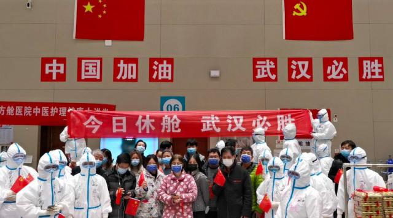

武汉新增确诊首度降至两位数，靠什么？
原文链接 备份链接 澎湃新闻记者 高宇婷 马作鹏 实习生 李彤 3月6日，武汉的新冠肺炎新增确诊病例自1月27日以来首度降至两位数，距离武汉封城，过去了44天。 根据湖北省卫健委3月7日发布的数据，截至3月6日24时，湖北新增新冠肺炎确诊 …
叶青武汉日记：武汉新增病例终于是两位数
 6315
6315
来源：正和岛
作者：叶青
03-07正在打榜，当前第2

[
北大纵横

北京北大纵横管理咨询有限责任公司 媒体
](https://archive.ph/o/jzMy8/mp.zhisland.com/wmp/user/personal/other/home?uid=6566632820481982469)
推荐人

1、武汉新增确诊病例74
6日，周五，晴。6日，全国新增确诊病例99例，终于降到了两位数，即低位数。新增死亡病例28例（湖北28例），新增疑似病例99例。截至6日，全国现有确诊病例22177例（其中重症病例5489例），累计治愈出院病例55404例，累计死亡病例3070例，累计报告确诊病例80651例，现有疑似病例502例。
湖北新增确诊病例74例（武汉74例）。新增死亡病例28例（武汉21例），现有确诊病例21239例（武汉19011例），其中重症病例5359例（武汉5028例）。累计死亡病例2959例（武汉2349例），累计确诊病例67666例（武汉49871例）。新增疑似病例47例（武汉46例），现有疑似病例301例（武汉256例）。现在要增加一个数字：境外输入。6日，新增报告境外输入确诊病例24例（甘肃17例，北京3例，上海3例，广东1例）。截至6日，累计报告境外输入确诊病例60例。除湖北省外，全国工业大省规模以上工业企业开工率大多已经超过了90%，工业大省比如浙江、广东、山东、江苏等省已超过95%。中小企业的复工复产率也在稳步提高，达到52%。与之相关的一个数字是，全国向47万户企业发放稳岗返还112亿元，惠及职工2426万人。3月底前，力争所有中小微企业稳岗返还基本发放到位。北京时间6日16时，除中国外，86个国家和地区累计确诊18070例新冠肺炎，累计死亡341例。
2、疫苗4月有望进入临床使用
6日，国务院联防联控机制举行新闻发布会，国家卫健委医药卫生科技发展研究中心主任郑忠伟介绍，新冠疫苗正按照5条技术路线研发，根据国家相关法律法规规定，估计部分疫苗4月份有希望进入临床或应急使用。 大家希望能够再提前一点。可是科学来不得半点虚假。前几天出现的一张军人打疫苗的图片可能是假的。 6日晚，在市新冠肺炎疫情防控指挥部视频调度会上，王忠林书记部署：“要在全市广大市民中深入开展感恩教育，感恩总书记、感恩共产党，听党话、跟党走，形成强大正能量。” 在人人都是自媒体的时代，引起网络上激烈争论是难免的。 作为武汉人，要感谢的人太多了，用一张图就一目了然了。 感谢全国人民的支持。

截至3月2日，共有71个国家和9个国际组织宣布向中国捐助疫情防控物资。大部分都是送急需的医护用品，如口罩、防护服、护目镜等，但是，还有不少土特产。澳大利亚还送了奶粉、燕麦片、饼干、肥皂等。白俄罗斯还送了外科医用大褂，马尔代夫送100万罐金枪鱼罐头，斯里兰卡送红茶，智利送水果，蒙古送羊。朝鲜、赤道几内亚、吉布提、捷克、老挝、蒙古、瓦努阿图直接送钱。国际竹藤组织送竹浆纸。在支援湖北武汉的医务人员中，90后00后有1.2万人，差不多是整个队伍的三分之一。昨天父母眼中的孩子，今天已然成为共和国的脊梁，成为我们国家的骄傲和希望。磨难是最好的老师。
3、江夏区中医医院患者清零
6日下午，光谷科技会展中心方舱医院最后21名患者痊愈出院，被转运到隔离点进行隔离后再回家。另有1名患者转诊处理。

光谷方舱医院从2月17日下午5点正式开始收治患者，至3月6日休舱累计收治病人数875人，累计治愈出院691人，累计转院184人。这是硚口体育中心方舱医院之后休舱的第二家方舱医院。不得不承认，提出建设方舱医院，是一个金点子。一个城市，医院再多都是有限的。方舱医院就是一种临时医院，17年前的“非典”还不需要。感谢最早提出方舱医院的王辰院士。3月6日傍晚6点，江夏区中医医院18名病友转院到江夏区第一人民医院，意味着江夏定点治疗新冠肺炎的区中医医院患者清零，该院恢复正常医疗服务。1月21日，江夏区中医医院接到江夏区疫情防控指挥部命令，开始“三区两通道”的改造，48小时改造完毕。1月23日（腊月二十九），开始接收第一批新冠肺炎患者。这也是全市率先清空区级中医医院普通病人，专门收治新冠肺炎患者的中医医院。截至目前，共治疗病人620人，其中，治愈510人，转院110人。圆满地完成了任务。湖北省450位康复者献出了16万多毫升的血浆，为病人救治和后期研发提供了重要信息。这也是一种奉献。6日，陈一新在武汉督导监狱、公安看守所、戒毒所、未成年犯管教所、养老院、福利院、精神病院等特殊场所疫情防控工作落实情况。具体督导意见：一是封控管理再细化。严把进口关。严把内控关。严把出口关。二是医疗救治再优化。对接好定点医院。运用好方舱医院（武市已建成4个监管场所方舱医院）。建设好集中隔离点（监管场所要加快建设单间板房隔离点）。三是安全稳定再强化。加强安全管理。要加强心理疏导。加强舆论引导。最终的数据出来了，截止5日，武汉市内监狱、公安看守所、未成年犯管教所、养老院、福利院、精神病院等特殊场所累计确诊1795人、疑似164人。希望不再有“跳”出来的数字。水龙头再关紧一点。发生了“汉喊”事件（楼内居民对中央指导组喊“假的”）之后，武汉的帮扶工作上了一个台阶。6日，武汉市委组织部印发工作提示，要求下沉党员干部与社区网格员、社区民警、小区物业管理人员、居民志愿者共同组成网格工作组，定格定人、定岗定责情况在小区出入口、居民楼栋、微信群公示。并通过电话排查、网格巡查、上门走访等方式，线上线下多渠道收集上报居民群众诉求，积极帮助协调解决，如实反映真实情况。对收集的居民群众诉求，下沉干部和社区（村）党组织能够协调解决的尽快予以解决，不能解决的第一时间梳理上报，并及时反馈处理解决情况。我觉得，了解民情民意最好的办法是暗访。即使“明察”，也要回避本地的干部，免得居民、企业家不敢说话。中央指导组可以直接邀请居民、企业家、网络人士开座谈会，不需要省市的任何干部参加，这样才能够听到最真实的声音。现在靠“骂”“喊”也是没有办法的办法。3月1日起，全市各城区（开发区）陆续启动无疫情小区、社区(村、队)的创建。6日，武汉市新冠肺炎疫情防控指挥部社区疫情防控组公示全市有无疫情小区2076个，无疫情社区79个，无疫情村（大队）1171个。中南大千家街宿舍区、中南大南湖校区周转房都是无疫情小区。无疫情小区有什么好处？除了最高可获奖励20万元之外，还有两点：一是无疫情小区可酌情调整管控等级；无疫情村将被允许在村内逐步恢复正常的生产、生活秩序。二是各类居住在无疫情小区内且未离开小区的居民，其连续居住时间将纳入离汉外出和复工复产前隔离观察的有效认定依据。总之，无疫情小区意味着自由度的提高。广播里说，住在北面没有太阳的小朋友缺钙，要补。以后设计师真不应该再设计出没有太阳的房子。过两天参加一个设计协会的直播，会提及此内容。终于可以回家了。6日，荆州市荆州区规定，辖区滞留他处需返家返岗人员，须同时具备下列三项条件：（一）非“四类”人员（确诊病例、疑似病例、无法排除发热人员、密接人员）和已解除隔离的“四类”人员；（二）近14天以来（含返程当天）无发热、咳嗽、胸闷等症状的人员；（三）返回地具有住房或固定就业岗位的人员。我有一个学生，自己和大儿子住在一个小区，太太与小姑娘以及老丈人丈母娘住在几百米外的另外一个小区。由于封闭小区，只能够在视频中吻吻孩子。十几年后，可能说起来外地人都不相信。
4、7省市景区对湖北任免票
为了感谢全国人民的支持，湖北很多地方的景区对医护人员免费。宜昌还对福建人免费。这是感恩之举。 但是，外省景区对湖北人的优惠又开始了。仿佛是爱的接力。 为期10天的130元“天柱山门票10元义售，义售善款将全部支援武汉”活动结束，截至2月29日24时，累计预售门票528588张。 4日上午10时，安徽潜山、湖北武汉两地举行“大爱天柱·情系武汉”云捐赠仪式。5285880元门票义售善款全部捐赠给长江日报长江公益、武汉市青少年发展基金会，用于关爱武汉战“疫”医护人员及子女。

很多武汉网友说：疫情过后，要到天柱山玩，一定要买全票。没有想到，天柱山带了一个头，各地就有不少模仿者。全国已有7省市的一些景区，对湖北籍居民免门票。2月23日，四川省南充市宣布全市景区自疫情解除、景区恢复正常营业之日起，对医务工作者及湖北籍游客免门票至2020年12月31日。2月24日，四川绵阳江油市宣布8大A级景区自恢复开放之日起，面向全国医务工作者及湖北籍游客实行免费开放政策；免费观看《李白归来》大型实景演艺剧目。……外卖点餐，不足为奇。那外卖点书呢？北京市和美团已就“实体书店+美团平台计划”达成产业协同框架协议，72家北京市实体书店成为第一批进驻美团平台的示范企业，美团平台则对这首批书店给予免费入场、流量补贴等支持。现在的武汉更加需要。我们设想一下：一个快餐店，把书与快餐一起送到你的手里，是什么样的感觉？
5、澳大利亚小报8页空白，当厕纸用
此前，有香港市民除了抢购口罩，白米、厕纸、消毒纸巾和漂白水货物都被抢购一空。旺角还发生了“厕纸劫案”，3名劫匪打劫一间超市，共劫走60条，约600卷厕纸。我们不知道是怎么回事。 日本超市、药妆店等地的厕纸货架均被买空，超市不得不出台限购政策。 美国民众也开始疯抢厕纸，Costco 超市不得不专门开辟一条生产线用于生产厕纸，并规定每个顾客限购5袋厕纸。 3月5日，澳大利亚达尔文一家当地小报为解决卫生纸短缺，多印出8页空白页，给读者当紧急厕纸用。 真是想得周到。 为什么抢的是手纸？ 在日本的社交媒体上流传着这样的消息，卫生纸和口罩是同一种材料生产的，卫生纸将断货，而且日本在售的卫生纸大部分是从中国进口的，将要断货，因此厕纸和纸类制品都会出现短缺，最好提前购买。 为此，日本政府和相关业界团体都辟谣：日本国内厕纸和口罩用的并不是同一种原料，也不依赖从中国进口，目前国内98%的厕纸是日本制造。 尽管辟谣，我们也大概知道是怎么一回事。 韩国将实施口罩限购措施，奇数年出生的只能在奇数日期购买口罩；偶数年出生的只能在偶数日期购买；每人每周限购2只。 这是一种中国人常用的“单双号”出行。
6、小结
武汉新增病例终于降到两位数。 如何感恩，大家都在讨论。 口罩短缺也带动手纸短缺。
无疫情小区：武汉人最想要的牌子。
[
以上文章内容，不代表正和岛平台观点
内容授权、投诉请联系neirong@zhisland.com
 举报内容
举报内容
](#)[](#)

原文链接 备份链接 澎湃新闻记者 高宇婷 马作鹏 实习生 李彤 3月6日，武汉的新冠肺炎新增确诊病例自1月27日以来首度降至两位数，距离武汉封城，过去了44天。 根据湖北省卫健委3月7日发布的数据，截至3月6日24时，湖北新增新冠肺炎确诊 …
原文链接 备份链接 7271 来源：正和岛 作者：叶青 03-01 1、武汉疑似病例降到393例 29日，农历二月初七。阴天。29日，全国新增确诊病例573例，新增死亡病例35例（湖北34例，河南1例），新增疑似病例132例。当日新增治愈 …
原文链接 备份链接 经历了“封城”一个月的武汉，到底怎么样了? 全文2100字，阅读约需4分钟 点击下图进入阅读新京报特别策划 *数据新闻编辑 **陈华罗、李媛 新媒体设计 高俊夫、李亚珍 校对 何燕* ▲300秒回顾武汉战疫：宏大数 …
原文链接 备份链接 国家卫健委网站 澎湃新闻记者 龚唯 马作鹏 3月6日0—24时，31个省（自治区、直辖市）和新疆生产建设兵团报告新增确诊病例99例，新增死亡病例28例（湖北28例），新增疑似病例99例。 当日新增治愈出院病例1678 …
原文链接 备份链接 叶青武汉日记：真希望3月底能清零 6511 来源：正和岛 作者：叶青 03-06正在打榜，当前第3 [ 智谷趋势 - - …